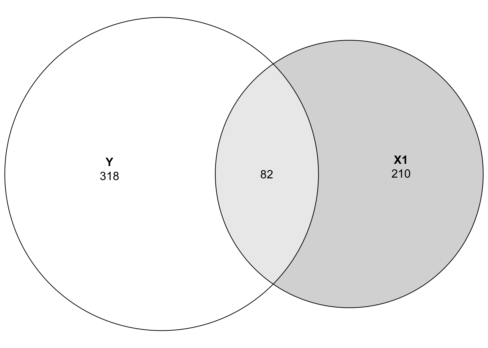
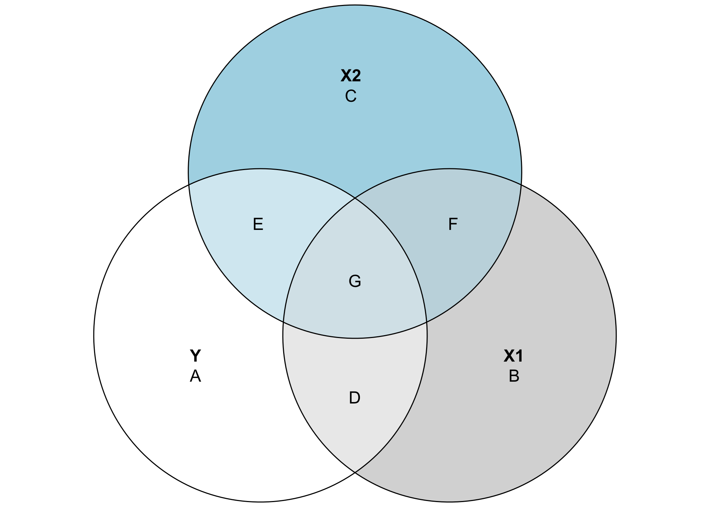
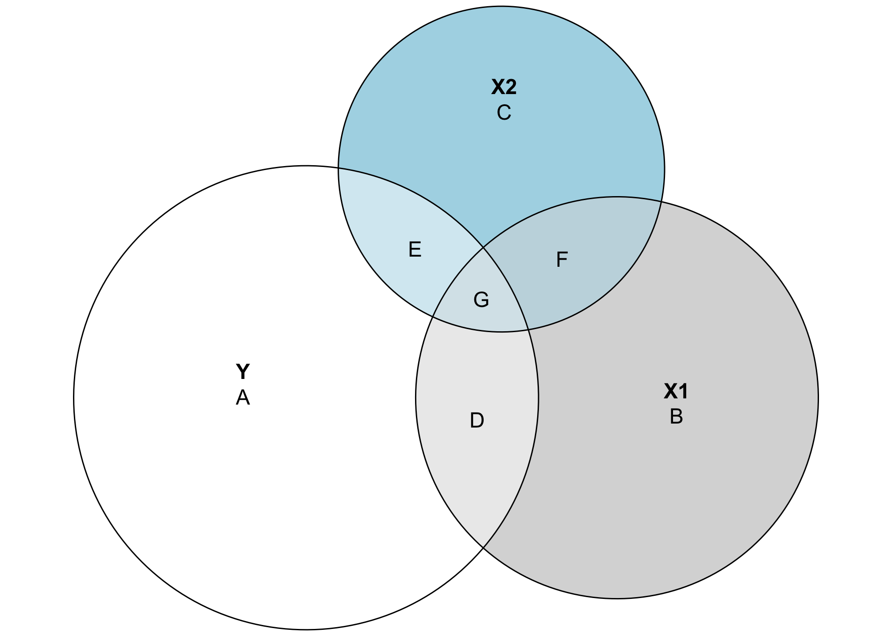
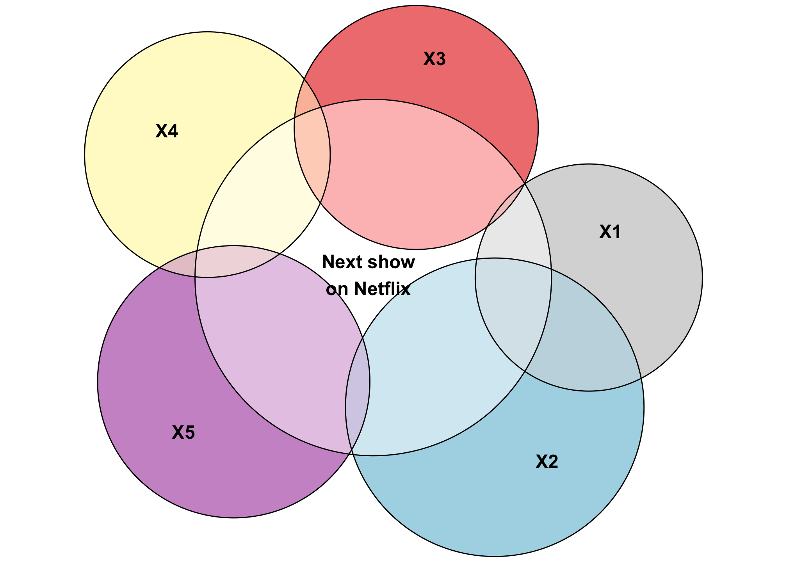
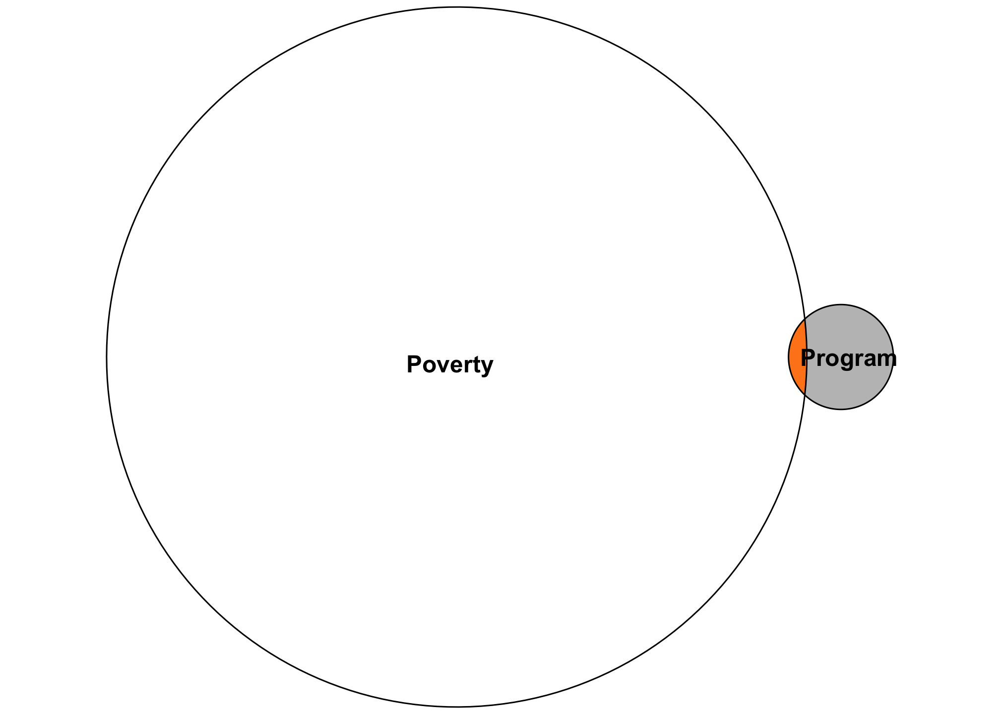
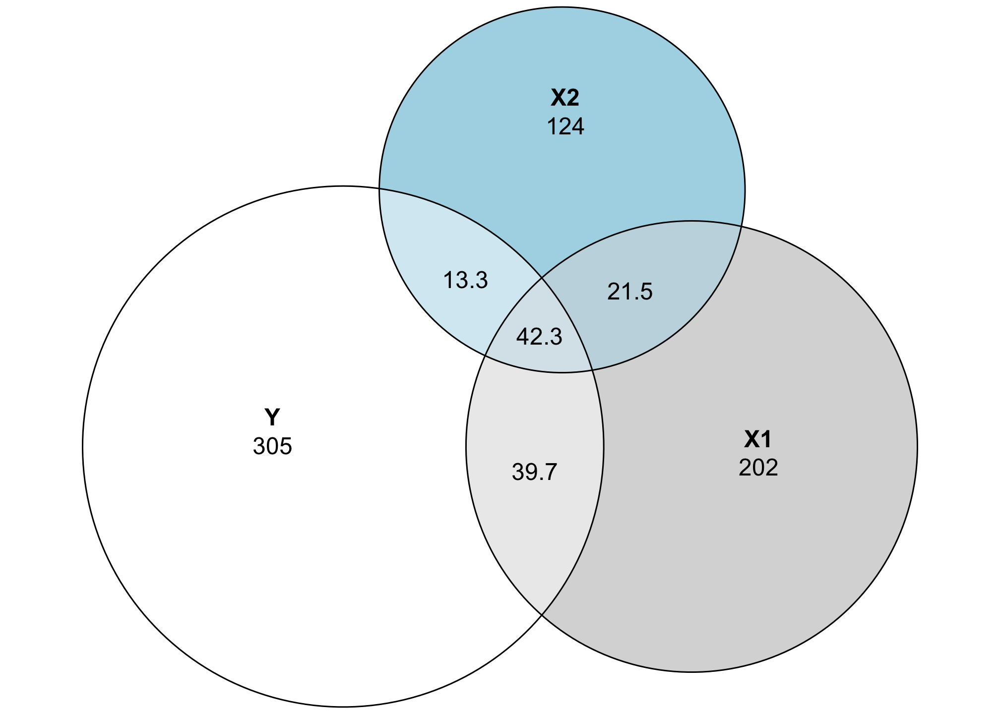
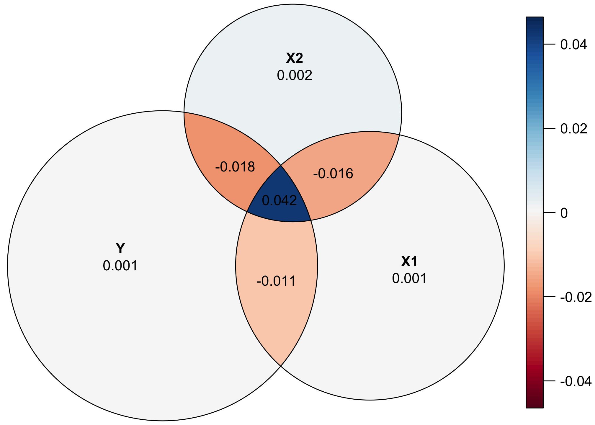

![]()
Regression is the core of my statistics and program evaluation/causal inference courses. As I’ve taught different stats classes, I’ve found that one of the regression diagnostic statistics that students really glom onto is \(R^2\). Unlike lots of regression diagnostics like AIC, BIC, and the joint F-statistic, \(R^2\) has a really intuitive interpretation—it’s the percent of variation in the outcome variable explained by all the explanatory variables. For instance, let’s explain global life expectancy using GDP per capita, based on data from the Gapminder project. Here’s the basic model:
\[ \widehat{\text{Life expectancy}} = \beta_0 + \beta_1 \text{GDP per capita} + \epsilon \]
# Just look at 2007
gapminder_2007 <- gapminder %>%
filter(year == 2007)
super_naive_model <- lm(lifeExp ~ gdpPercap, data = gapminder_2007)
tidy(super_naive_model)
## # A tibble: 2 × 5
## term estimate std.error statistic p.value
## <chr> <dbl> <dbl> <dbl> <dbl>
## 1 (Intercept) 59.6 1.01 59.0 9.89e-101
## 2 gdpPercap 0.000637 0.0000583 10.9 1.69e- 20
glance(super_naive_model)
## # A tibble: 1 × 12
## r.squared adj.r.squared sigma statistic p.value df logLik AIC BIC deviance
## <dbl> <dbl> <dbl> <dbl> <dbl> <dbl> <dbl> <dbl> <dbl> <dbl>
## 1 0.461 0.457 8.90 120. 1.69e-20 1 -511. 1028. 1037. 11086.
## # ℹ 2 more variables: df.residual <int>, nobs <int>This is an awful model on theoretical grounds, but whatever. A $1 increase in GDP per capita is associated with a 0.001 year increase in life expectancy, on average. Look at all those diagnostics though—AIC? BIC? LogLik? Those are important, but definitely not intuitive. The \(R^2\) value, on the other hand, is nice and interpretable. GDP per capita explains 46.1% of the variation in life expectancy. That’s soundbite-worthy. Students love it.
People also love to critique models based on it. In my program evaluation class, a model in one of my problem sets has an \(R^2\) of 0.02, and without fail, a majority of students dismiss it because of its low explanatory power. It only explains 2% of the variation in the outcome! It must be junk!
But low \(R^2\)s aren’t necessarily bad. And while saying that a model explains X% of the variation in an outcome, what does that even mean in practice?
So how the heck does \(R^2\) work anyway? I’ve struggled teaching this, but recently a friend mentioned that she teaches students to imagine \(R^2\) as a combination of overlapping circles, or a type of Venn diagram. I’d never heard of this approach before, so I went down a really interesting rabbit hole to discover that this approach has actually been used for decades! Let’s go down that rabbit hole together!
Regression as overlapping circles
The earliest example I found is Cohen and Cohen (1975), who proposed visualizing the shared variance between 2–3 variables as a “ballantine” graph (apparently named after an ale logo?), or what we call nowadays a Venn or Euler diagram. Others refined their approach, like Hunt (1986) who provides all sorts of fancy geometric equations to make them accurate (and provides some neat vintage Pascal code in the appendix!), and Ip (2001), who shows a bunch of different examples and highlights some of the limitations of using this approach.
For this ongoing example, we’ll simulate some correlated data using the faux package. We could use real data, but as you’ll see, these diagrams are pretty finicky and fragile and generally need very tame data to work. Here we’ll create data with three variables that are normally distributed with these parameters:
-
Y: mean = 10, sd = 2 -
X1: mean = 9, sd = 1.7 -
X2: mean = 9, sd = 1.3
We’ll make Y and X1 be correlated at r = 0.5, Y and X2 correlated at r = 0.3, and X1 and X2 correlated at r = 0.4:
set.seed(1234)
df <- rnorm_multi(n = 100,
mu = c(10, 9, 9),
sd = c(2, 1.7, 1.3),
r = c(0.5, 0.3, 0.4),
varnames = c("Y", "X1", "X2"),
empirical = FALSE)
# Look at the first few rows
head(df)
## Y X1 X2
## 1 8.22 6.73 8.38
## 2 10.17 9.36 10.12
## 3 12.03 10.32 9.86
## 4 5.41 5.80 8.38
## 5 10.10 10.08 10.09
## 6 11.13 9.11 9.94
# Check if the correlations worked
cor(df)
## Y X1 X2
## Y 1.000 0.453 0.373
## X1 0.453 1.000 0.468
## X2 0.373 0.468 1.000
# Close enough!In these regression diagrams, each variable is shown as a circle sized according to its variance, or:
\[ \operatorname{var} = \sigma^2 = \frac{\sum (\color{gray}{\overbrace{\color{black}{x_i}}^{\substack{\text{Single} \\ \text{value}}}} - \color{gray}{\overbrace{\color{black}{\bar{x}}}^{\substack{\text{Mean of} \\ \text{all values}}}\color{black}{)^2}}}{\color{gray}{\underbrace{\color{black}{n}}_{\substack{\text{Sample} \\ \text{size}}}}-1} \]
According to Ip (2001), you can also size the circles based on just the numerator of that equation, or the sum-of-squares, which is the same value proportionally number (it’s just not divided by \(n-1\)). It’s also easier to work with when plotting, so that’s what we’ll use throughout this example.
\[ \color{gray}{\overbrace{\color{black}{{\scriptstyle\sum} (x_i - \bar{x})^2}}^{\text{Sum of squares}}} \]
We can even make a little function to calculate the sum of squares for us:
Enough math, though—let’s make some plots! We’ll use the eulerr package for this, since (1) it calculates proportional overlaps between circles (that’s the key technical difference between Venn and Euler diagram—Venn diagrams are supposed to have equally sized overlapping areas), and (2) it uses grid graphics, so it fits nicely in the ggplot ecosystem.
Relationship between two variables
First let’s just look at the relationship between Y and X1. We’ll use the sum of squares to calculate the size for each circle:
Just looking at this plot, we can see that Y has more variation than X1. Neat.
These two variables are related to each other though and have some covariance. We can calculate the shared covariance using ANOVA. Ordinarily you need to feed R’s anova() function an lm() object to calculate different variance statistics (e.g. anova(lm(Y ~ X1, data = df))), but to save some typing, you can also use the aov() function to skip the intermediate lm() step. The nice thing about using the sum of squares values for these diagrams rather than variance values is that aov() reports its results as sums of squares, so we can use those results directly.
Let’s see how much of the variation between Y and X1 is shared:
aov(Y ~ X1, data = df)
## Call:
## aov(formula = Y ~ X1, data = df)
##
## Terms:
## X1 Residuals
## Sum of Squares 82 318
## Deg. of Freedom 1 98
##
## Residual standard error: 1.8
## Estimated effects may be unbalancedIf we look at the sum of squares row, we can see that 81.98 sum-of-squares units (whatever those mean) are shared between the two variables, with 317.87 not shared (or residual). To plot this overlap, we need to do a little bit of set theory math. We can’t just tell Y to be 399 units big—we need to subtract the shared space from both Y and X1. We’ll extract the sum of squares value from aov() (using broom::tidy() to make this easier):
ss_both_y_x1 <- aov(Y ~ X1, data = df) %>%
tidy() %>%
filter(term == "X1") %>%
pull(sumsq)
ss_both_y_x1
## [1] 82
plot(euler(c("Y" = ss_y - ss_both_y_x1,
"X1" = ss_x1 - ss_both_y_x1,
"Y&X1" = ss_both_y_x1)),
quantities = TRUE)
Now we can visualize the covariance between these two variables! Let’s get rid of the raw numbers and add some letters for the different segments:
plot(euler(c("Y" = ss_y - ss_both_y_x1,
"X1" = ss_x1 - ss_both_y_x1,
"Y&X1" = ss_both_y_x1)),
quantities = c("A", "B", "C"))Area C here represents the amount of variation in Y explained by X1, while Area A represents the unexplained portion of Y. In regression language, A is basically the error term:
\[ \hat{Y} = \beta_0 + \beta_1 X_1 + \color{gray}{\overbrace{\epsilon}^{\color{black}{\text{A}}}} \]
The great thing about visualizing this is that C also represents the \(R^2\)! In general, \(R^2\) is the ratio between explained and total variance:
\[ R^2 = \frac{\text{Explained variance in }Y}{\text{Total variance in }Y} \]
Based on this diagram, we can write this as:
\[ R^2 = \frac{C}{A + C} \]
Using actual numbers, we get
\[ R^2 = \frac{81.98}{317.87 + 81.98} = 0.205 \]
We can do this more precisely with code:
part_a <- ss_y - ss_both_y_x1
part_c <- ss_both_y_x1
part_c / (part_a + part_c)
## [1] 0.205According to this, X1 explains 20.5% of the variation in Y. That’s apparent visually—the overlapping space covers about 20% of the total Y circle.
Let’s run a regression model and check the \(R^2\) value to see if it’s the same:
lm(Y ~ X1, data = df) %>%
glance() %>%
pull(r.squared)
## [1] 0.205Incredible!! It’s the same! That’s so cool.
Relationship between three variables
Where this gets even more useful is when we look at the overlapping space between three different variables. It’s also a little more complicated, since we need to calculate a bunch of different shared variances and do some set theory calculations to find the exact size of these different slivers of the diagram. Here’s a general diagram of what we’ll be calculating (this is unrelated to the data we’ve been working with and doesn’t use any actual numbers—it’s just a reference so we can find which shared variances we need to calculate):
plot(euler(c("Y" = 4,
"X1" = 4,
"X2" = 4,
"X1&Y" = 2,
"X2&Y" = 2,
"X1&X2" = 2,
"Y&X1&X2" = 0.5)),
quantities = c(LETTERS[1:7]))
This looks complicated, but the same principles apply. The entire circles for Y, X1, and X2 represent each variable’s total variance. Overlapping areas represent shared variance. For instance, the combination of D and G here (or \(A \cap B\)) is the covariance that we calculated previously. The \(R^2\) is still here too—the total explained variance in Y is the combination of D, E, and G, while A is the residual unexplained variance. That means we can calculate \(R^2\) like this:
\[ \frac{D + E + G}{A + D + E + G} \]
This visualization also helps with the intuition of \(R^2\). Generally when you add additional variables to a regression model, the \(R^2\) increases. That’s because you’re adding another circle to the diagram and absorbing more of the variation in the outcome. For instance, even though the numbers in this diagram aren’t to scale at all, you can see that (D + G) (the \(R^2\) that we calculated in the two-variable diagram) is smaller than (D + E + G). There’s more explained variance here.
To calculate the actual values for each of these segments, we’ll use aov() again to find the shared variance. This will involve a lot of different calculations and some algebra to isolate each segment. This table will help us keep everything straight:
| Segment | Explanation | Code or algebra |
|---|---|---|
| A + D + E + G | Total variation in Y
|
ss(df$Y) or aov(Y ~ 1)
|
| B + D + F + G | Total variation in X1
|
ss(df$X1) or aov(X1 ~ 1)
|
| C + E + F + G | Total variation in X2
|
ss(df$X2) or aov(X2 ~ 1)
|
| A | Unexplained variation in Y after accounting for X1 and X2
|
Residuals from aov(Y ~ X2 + X1)
|
| B | Unexplained variation in X1 after accounting for Y and X2
|
Residuals from aov(X1 ~ Y + X2)
|
| C | Unexplained variation in X2 after accounting for Y and X1
|
Residuals from aov(X2 ~ Y + X1)
|
| D + G | Variance shared by Y and X1
|
X1 in aov(Y ~ X1)
|
| E + G | Variance shared by Y and X2
|
X2 in aov(Y ~ X2)
|
| D + G | Variance shared by X1 and X2
|
X2 in aov(X1 ~ X2)
|
| D | Variance only between Y and X1, without influence from X2
|
(A + D + E + G) − A − (E + G) |
| E | Variance only between Y and X2, without influence from X1
|
(C + E + F + G) − C − (F + G) |
| F | Variance only between X1 and X2, without influence from Y
|
(B + D + F + G) − B − (D + G) |
| G | Variance shared by Y, X1, and X2
|
(D + G) − D |
PHEW. That’s a lot. Here’s all the code for it:
y_total <- ss(df$Y) # A + D + E + G
x1_total <- ss(df$X1) # B + D + F + G
x2_total <- ss(df$X2) # C + E + F + G
# A
y_alone <- aov(Y ~ X2 + X1, data = df) %>%
tidy() %>%
filter(term == "Residuals") %>%
pull(sumsq)
# B
x1_alone <- aov(X1 ~ Y + X2, data = df) %>%
tidy() %>%
filter(term == "Residuals") %>%
pull(sumsq)
# C
x2_alone <- aov(X2 ~ Y + X1, data = df) %>%
tidy() %>%
filter(term == "Residuals") %>%
pull(sumsq)
# D + G
y_plus_x1 <- aov(Y ~ X1, data = df) %>%
tidy() %>%
filter(term == "X1") %>%
pull(sumsq)
# E + G
y_plus_x2 <- aov(Y ~ X2, data = df) %>%
tidy() %>%
filter(term == "X2") %>%
pull(sumsq)
# F + G
x1_plus_x2 <- aov(X1 ~ X2, data = df) %>%
tidy() %>%
filter(term == "X2") %>%
pull(sumsq)
# D = (A + D + E + G) − A − (E + G)
y_x1_alone <- y_total - y_alone - y_plus_x2
# E = (A + D + E + G) − A − (D + G)
y_x2_alone <- y_total - y_alone - y_plus_x1
# G = (D + G) − D
y_x1_x2_alone <- y_plus_x1 - y_x1_alone
# F = (F + G) - G
x1_x2_alone <- x1_plus_x2 - y_x1_x2_aloneAgain, that’s super complex, but it’s really just a ton of set theory algebra.
Now that we have all these little pieces, let’s plot them!
all_pieces <- c("Y" = y_alone,
"X1" = x1_alone,
"X2" = x2_alone,
"X1&Y" = y_x1_alone,
"X2&Y" = y_x2_alone,
"X1&X2" = x1_x2_alone,
"Y&X1&X2" = y_x1_x2_alone)
all_pieces
## Y X1 X2 X1&Y X2&Y X1&X2 Y&X1&X2
## 304.6 201.6 123.6 39.7 13.3 21.5 42.3
plot(euler(all_pieces),
quantities = LETTERS[1:7])
These circles are now all proportional to the actual values in the data. Both X1 and X2 explain some of the variation in Y, but not a ton (and X1 explains more than X2). The explained variance is represented by the area D + E + G, which means we can now calculate the actual \(R^2\):
\[ R^2 = \frac{D + E + G}{A + D + E + G} = \frac{39.69 + 13.27 + 42.29}{304.6 + 39.69 + 13.27 + 42.29} = 0.238 \]
Or with code:
(y_x1_alone + y_x2_alone + y_x1_x2_alone) /
(y_alone + y_x1_alone + y_x2_alone + y_x1_x2_alone)
## [1] 0.238Let’s confirm it with a regression model:
lm(Y ~ X1 + X2, data = df) %>%
glance() %>%
pull(r.squared)
## [1] 0.238AMAZING. It’s the same. It worked!
Nicer plot
With everything nice and proportional, let’s make this plot a little fancier for teaching purposes. Since eulerr uses grid-based graphics, we can use it with patchwork to add annotations (or combine it with other ggplot objects if we really wanted to):
library(patchwork) # For combining ggplot and grid elements
library(grid) # For making custom grid grobs
library(latex2exp) # For writing LaTeX-like text with grid plots
nice_plot <- plot(euler(all_pieces),
quantities = list(labels = LETTERS[1:7],
fontfamily = "Roboto Condensed Light",
fontsize = 16),
fills = list(fill = c("#7FDBFF", "grey30", "grey80",
"#FF851B", "#FF851B", "grey50", "#FF851B"),
alpha = c(1, 0.5, 0.5, 0.5, 0.5, 0.5, 0.35)),
labels = list(fontfamily = "Roboto Condensed",
fontface = "bold", fontsize = 20))
math_part <- textGrob(TeX("R^2 = \\frac{D + E + G}{A + D + E + G}"),
gp = gpar(fontfamily = "Roboto Condensed",
col = "grey50", fontsize = 13))
# Ordinarily patchwork works just fine with grid grob objects, like the results
# from plot.euler(), but *not* when they're the first element in patchwork chain
# of plots. To make grob objects work nicely with patchwork, we need to wrap
# them in wrap_elements()
wrap_elements(nice_plot) +
inset_element(math_part,
left = -0.04, bottom = 0.72, right = 0.3, top = 0.85) +
plot_annotation(
title = "R² represented as an Euler diagram",
subtitle = "Orange area (D + E + G) shows the total variance in\noutcome Y that is jointly explained by X1 and X2",
caption = "Circles sized according to each variable's sum of squares; size of overlapping areas\nis not 100% correct due to limitations in available geometric space",
theme = theme(plot.title = element_text(size = 20, family = "Roboto Condensed", face = "bold"),
plot.subtitle = element_text(size = 15, family = "Roboto Condensed"),
plot.caption = element_text(size = 10, family = "Roboto Condensed Light", hjust = 0))
)
Multicollinearity
Another neat feature of this kind of diagram is that it helps visualize multicollinearity, or the issues that arise when you control for explanatory variables that explain the same kind of variation in the outcome. Multicollinearity leads to strange coefficient estimates and variance inflation because mathematically the regression model has no way of telling which of the highly correlated explanatory variables explain which parts of the outcome.
In the diagram, areas D and E are uniquely accounted for by X1 and X2 respectively, but G is is overlapped, making it impossible to know if X1 or X2 explains that portion of the variation in Y. Similarly, area F shows the variation shared by both X1 and X2, and again it’s impossible to know which parts are unique. As a result, the area (F + G) represents the total multicollinearity in the model:
Why this matters
One really neat thing about thinking about \(R^2\) this way is that it highlights a key difference in the purposes of regression: prediction and estimation.
With prediction, the goal of the regression model is to predict the outcome as accurately as possible. This is what Netflix does when guessing what show you might want to watch next, or what the US Holocaust Museum does to predict genocide and human rights abuses. You throw in as many control variables as you can in order to create a model that explains variation in Y as accurately as possible. As a result, these kinds of models will typically have a high \(R^2\).
plot(euler(c("Next show\non Netflix" = 1,
"X1" = 4,
"X2" = 6,
"X3" = 4,
"X4" = 6,
"X5" = 6,
"X1&Next show\non Netflix" = 2,
"X2&Next show\non Netflix" = 4,
"X3&Next show\non Netflix" = 4,
"X4&Next show\non Netflix" = 2,
"X5&Next show\non Netflix" = 4,
"X1&X2" = 2,
"Next show\non Netflix&X1&X2" = 0.5)))
Look at that squishy little area of Y that’s not explained by any of the other variables. Neato.
In the realm of causal inference in social science, or with estimation in general, the focus of the analysis is on a single X variable , like whether or not people in the sample participated in a social program. You might include a bunch of control variables if you identification strategy tells you do: an interaction term for time and group if you’re using difference-in-differences, an indicator showing if people are above/below a threshold if you’re using regression discontinuity, an instrument if you’re using instrumental variables, confounding control variables if you’re using inverse probability weighting and a DAG, or nothing(!) if you’re using a randomized controlled trial (like you can really just run lm(Y ~ treatment)!). Each of these types of models will inevitably return an \(R^2\) value, since that what regression does, but we care less about that when estimating causal effects. All we care about is the accuracy of one little sliver of the diagram—that single policy lever that we might have control over to influence the larger outcome.
For instance, let’s say you’re a new little nonprofit who created a cool new program to help reduce childhood poverty within your city. You want to know if that program does anything to poverty more generally. You have lots of donor money so you decide to run a carefully designed randomized trial. You run a regression model and get a tiny \(R^2\) value, like 0.015. You panic because that means your experiment only explains 1.5% of the variation in poverty, and that seems really bad and low!
But that’s actually totally fine. The goal with the experiment is not to explain all the factors that create poverty—there are far too many to include in a regression model. The goal here is to have an accurate estimate of how much your single program affects poverty. There’s no way your little program is going to explain 80% of the variation in poverty. If you had a high \(R^2\), I’d be incredibly worried! (Unless you really discovered a program that is a true silver bullet for poverty!)
Looking at an Euler diagram demonstrates this more easily. All we care about in this experiment is that little sliver. Is it accurate? Does the treatment move the needle on poverty in any way? If so, great!
plot(euler(c("Poverty" = 100,
"Program" = 2,
"Poverty&Program" = 0.25)),
fills = c("white", "grey75", "#FF851B"))
So don’t dismiss models immediately just because of a low \(R^2\)! The purpose of the models matters!
Caveats
There are a few important caveats to keep in mind with these diagrams:
1: This is inefficient
Calculating each of these plot segments by hand is tedious and there will inevitably be typos and errors (there are probably errors in this very post!). Also, due to how ANOVA works, the order of the variables you specify matters a lot: aov(Y ~ X1 + X2) and aov(Y ~ X2 + X1) give completely different sum of squares for the joint variation of Y, X1, and X2. That in turn changes the sizes of the segments.
When writing this, I spent way too much time playing with covariance matrices, partial correlation matrices, and variance-covariance matrices to see if I could calculate these areas more mathematically using the guts of regression and ANOVA, but it was too tricky. Smarter people than me will need to figure it out.
2: This doesn’t work in all cases
It’s possible to have negative areas, depending on the data you have, and negative areas are unplottable (Ip (2001) shows an example of this at the end of his article). In order to use this kind of diagram when teaching, you have to use carefully constructed data—you can’t just throw any model into a chart like this. Also, when working with actual numbers, you’re generally limited to just one or two explanatory variables. Any more and the math gets too complex.
3: This isn’t 100% accurate
The geometry behind creating these Euler diagrams is complex and doesn’t always work perfectly. Let’s plot the actual values of the sum of squares for each segment:
plot(euler(all_pieces),
quantities = TRUE)
That central piece where Y, X1, and X2 is 42, but it’s smaller any of the other intersections, which all have smaller sum-of-squares values. Yikes!
The eulerr package provides a way of diagnosing how bad things are by either inspecting the results of euler() directly, or looking at the residuals and errors with error_plot():
euler(all_pieces)
## original fitted residuals regionError
## Y 304.6 303.9 0.742 0.001
## X1 201.6 200.3 1.326 0.001
## X2 123.6 121.3 2.319 0.002
## Y&X1 39.7 47.6 -7.953 0.011
## Y&X2 13.3 26.5 -13.236 0.018
## X1&X2 21.5 33.0 -11.541 0.016
## Y&X1&X2 42.3 10.7 31.558 0.042
##
## diagError: 0.042
## stress: 0.009
error_plot(euler(all_pieces),
quantities = TRUE)
That central piece is underrepresented, while the other intersections are overrepresented. Alas.
References
Citation
@online{heiss2021,
author = {Heiss, Andrew},
title = {Exploring {R}\textsuperscript{2} and Regression Variance with
{Euler/Venn} Diagrams},
date = {2021-08-21},
url = {https://www.andrewheiss.com/blog/2021/08/21/r2-euler/},
doi = {10.59350/t57vy-p5115},
langid = {en}
}